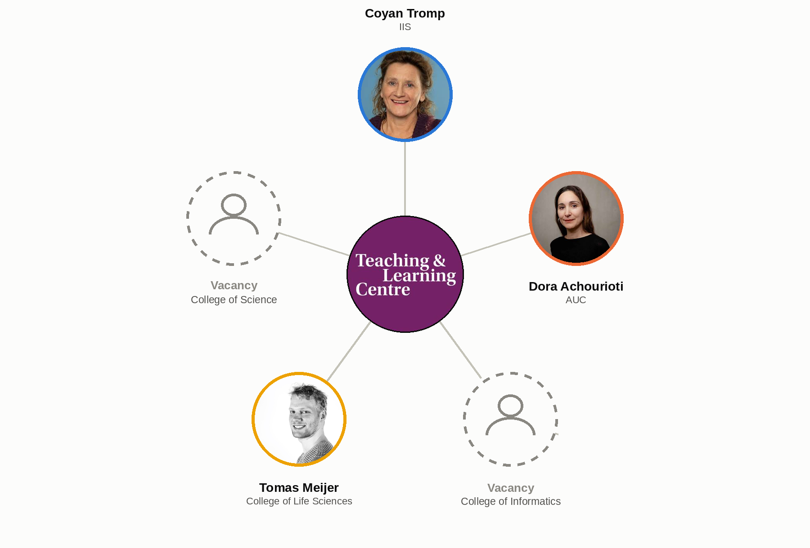

<!DOCTYPE html>
<html lang="en">
<head>
    <meta charset="utf-8" />
    <meta name="viewport" content="width=device-width, initial-scale=1.0, maximum-scale=1.0, user-scalable=no" />

    <title></title>
    <link rel="stylesheet" href="../_shared/1cc66e6465f6/dist/reset.css">
    <link rel="stylesheet" href="../_shared/1cc66e6465f6/dist/reveal.css" />
    <link rel="stylesheet" href="css/slides-extended.css" />
    <link rel="stylesheet" href="../_shared/1cc66e6465f6/dist/theme/white.css" id="theme" />
    <link rel="stylesheet" href="../_shared/1cc66e6465f6/plugin/highlight/zenburn.css" />
    <link rel="stylesheet" href="../_shared/1cc66e6465f6/plugin/customcontrols/style.css">


    <link rel="stylesheet" href="css/tlc-xmas.css" />

    <script defer src="../_shared/1cc66e6465f6/dist/fontawesome/all.min.js"></script>

    <script type="text/javascript">
        function pageInIframe() {
            return (window.location !== window.parent.location);
        }

        let forgetPop = true;
        function onPopState(event) {
            if(forgetPop){
                forgetPop = false;
            } else if( pageInIframe()) {
                parent.postMessage(event.target.location.href, "app://obsidian.md");
            }
        }
        window.onpopstate = onPopState;
        window.onmessage = event => {
            if(event.data == "reload"){
                window.document.location.reload();
            }
            forgetPop = true;
        }

        function fitElements() {
            const itemsToFit = document.getElementsByClassName('fitText');
            for (const item in itemsToFit) {
                if (Object.hasOwnProperty.call(itemsToFit, item)) {
                    const element = itemsToFit[item];
                    fitElement(element, 1, 1000);
                    element.classList.remove('fitText');
                }
            }
        }

        function fitElement(element, start, end) {

            let size = (end + start) / 2;
            element.style.fontSize = `${size}px`;

            if (Math.abs(start - end) < 1) {
                while (element.scrollHeight > element.offsetHeight) {
                    size--;
                    element.style.fontSize = `${size}px`;
                }
                return;
            }

            if (element.scrollHeight > element.offsetHeight) {
                fitElement(element, start, size);
            } else {
                fitElement(element, size, end);
            }
        }

        document.onreadystatechange = () => {
            fitElements();
            if (document.readyState === 'complete') {
                if (pageInIframe() && window.location.href.indexOf("?export") != -1){
                    parent.postMessage(event.target.location.href, "app://obsidian.md");
                }
                if (window.location.href.indexOf("print-pdf") != -1){
                    let stateCheck = setInterval(() => {
                        clearInterval(stateCheck);
                        window.print();
                    }, 250);
                }
            }
        };
    </script>
</head>

<body>
    <div class="reveal">
        <div class="slides"><section data-separator="
?
---
?
" data-separator-vertical="
?
--
?
" data-separator-notes="note:" data-markdown><script type="text/template"><!-- .slide: class="title-slide title-bar title-stem drop" data-state="vlt-title" template="" -->
<div class="" style="position: absolute; left: 0px; top: 0px; height: 700px; width: 960px; min-height: 700px; display: flex; flex-direction: column; align-items: start; justify-content: center" absolute="true">

<style>
:root { --r-background-color: #FCFCFB; }
.reveal-viewport, .reveal .slides { background-color: #FCFCFB; }
/* Meeting the challenge: let the (large) topology image run into the right margin so the text column keeps its width */
.reveal section.net-slide .net-graph { position: relative; flex: none; width: 444px; }
.reveal section.net-slide .net-graph p { margin: 0; }
.reveal section.net-slide .net-graph img { margin: 0 -220px 0 -40px !important; display: block; }
/* clickable portraits and logo */
.reveal section.net-slide .ng-link { position: absolute; border-radius: 50%; z-index: 5; }
.reveal section.net-slide .ng-link:hover { box-shadow: 0 0 0 4px rgba(188,0,49,.4); }
/* Workflow slide: process diagram */
.reveal section.wf-slide .wf-svg { display: block; width: 100%; height: auto; margin-top: 12px; }
.reveal section.wf-slide .wf-loop { margin-top: 12px; padding: 8px 18px; border: 2px dashed #9a9a9a; border-radius: 10px; font-size: 17px; font-weight: 700; color: #4a4a4a; text-align: center; }
/* The thesis slide: list a little smaller so it fits next to the drawing */
.reveal section.thesis-slide split { font-size: 0.8em; gap: 16px !important; }
/* the drawing is transparent, so it can overlap the text column's empty right-hand side */
.reveal section.thesis-slide split img { width: 620px !important; max-width: none !important; margin: -120px -30px 0 -90px !important; }
/* Title slide: text left, stemmie right (facing the text) */
.reveal section.title-stem split { align-items: center !important; flex-wrap: nowrap; }
.reveal section.title-stem .ts-left h1 { max-width: none; }
.reveal section.title-stem img { width: 330px !important; max-width: none !important; margin: 0 0 0 -20px !important; display: block; }
/* Footer: month and year of the presentation after the slide-controls grid icon */
.reveal .slide-number::after { content: "November 2026"; position: absolute; left: 132px; top: 0; white-space: nowrap; color: #6b6b6b; font-size: 18px; }
</style>


<split even gap="3">

<div class="ts-left">
<h1>Assessment Network</h1>
<h2>Innovating assessment at FNWI</h2>
<p class="vlt-title-meta"><span class="vlt-name">Vincent Tijms</span><br><span class="vlt-role">Educational Adviser GenAI and Assessment</span><br><span class="vlt-date"></span></p>
</div>


</split>
</div></script></section><section data-separator="
?
---
?
" data-separator-vertical="
?
--
?
" data-separator-notes="note:" data-markdown><script type="text/template"><!-- .slide: class="drop" template="" -->
<div class="" style="position: absolute; left: 0px; top: 0px; height: 700px; width: 960px; min-height: 700px; display: flex; flex-direction: column; align-items: start; justify-content: center" absolute="true">

# The challenge in a nutshell

- Programmes are seeing challenges in assessment, especially due to GenAI
- They do not have their own assessment specialists
- BEQ- and SEQ-certified staff does not necessarily have time for assessment innovation
- But a single assessment specialist at TLC Science cannot serve all programmes
</div></script></section><section ><section data-separator="
?
---
?
" data-separator-vertical="
?
--
?
" data-separator-notes="note:" data-markdown><script type="text/template"><!-- .slide: class="top-split net-slide drop" template="" -->
<div class="" style="position: absolute; left: 0px; top: 0px; height: 700px; width: 960px; min-height: 700px; display: flex; flex-direction: column; align-items: start; justify-content: center" absolute="true">

# Meeting the challenge

<split even gap="3">

- Knowledge hub at TLC Science, connected to teaching staff at FNWI and AUC
- Each represented college has a network member who has _local knowledge_
- As a network, actual assessment cases are addressed with value to all

<div class="net-graph">




<a class="ng-link" href="https://www.uva.nl/profiel/t/r/j.c.tromp/j.c.tromp.html" target="_blank" rel="noopener" title="Coyan Tromp" style="left:269.8px;top:39.9px;width:84.5px;height:84.5px"></a>
<a class="ng-link" href="https://www.uva.nl/en/profile/a/c/t.achourioti/t.achourioti.html" target="_blank" rel="noopener" title="Dora Achourioti" style="left:418.4px;top:147.8px;width:84.5px;height:84.5px"></a>
<a class="ng-link" href="https://www.uva.nl/en/profile/m/e/t.t.meijer/t.t.meijer.html" target="_blank" rel="noopener" title="Tomas Meijer" style="left:177.8px;top:322.7px;width:84.5px;height:84.5px"></a>
<a class="ng-link" href="https://tlc.uva.nl/en/article-faculty/fnwi-en/" target="_blank" rel="noopener" title="Teaching &amp; Learning Centre" style="left:261.2px;top:187.7px;width:101.7px;height:101.7px"></a>
</div>

</split>
</div></script></section><section data-separator="
?
---
?
" data-separator-vertical="
?
--
?
" data-separator-notes="note:" data-markdown><script type="text/template"><!-- .slide: class="drop" template="" -->
<div class="" style="position: absolute; left: 0px; top: 0px; height: 700px; width: 960px; min-height: 700px; display: flex; flex-direction: column; align-items: start; justify-content: center" absolute="true">

# Why it works

- Supports quick learning for new members and teachers
- Allows for smooth responsiveness towards programmes
- Offers place for knowledge exchange
- Boosts ideation
</div></script></section></section><section data-separator="
?
---
?
" data-separator-vertical="
?
--
?
" data-separator-notes="note:" data-markdown><script type="text/template"><!-- .slide: class="drop" template="" -->
<div class="" style="position: absolute; left: 0px; top: 0px; height: 700px; width: 960px; min-height: 700px; display: flex; flex-direction: column; align-items: start; justify-content: center" absolute="true">

# Goals 2027

- Having a clear coordination structure and processes for the network
- Tackling an assessment challenge for each college, including implementation of the solution
- Providing new assessment forms for BSc theses/capstones
- Reviewing any college-level assessment plans
</div></script></section><section data-separator="
?
---
?
" data-separator-vertical="
?
--
?
" data-separator-notes="note:" data-markdown><script type="text/template"><!-- .slide: class="top-title wf-slide drop" template="" -->
<div class="" style="position: absolute; left: 0px; top: 0px; height: 700px; width: 960px; min-height: 700px; display: flex; flex-direction: column; align-items: start; justify-content: center" absolute="true">

# Workflow

<svg class="wf-svg" viewBox="0 0 884 372" xmlns="http://www.w3.org/2000/svg" font-family="Arial, Helvetica, sans-serif">
<defs><marker id="wf-ah" viewBox="0 0 10 10" refX="8" refY="5" markerWidth="4.2" markerHeight="4.2" orient="auto"><path d="M0,0 L10,5 L0,10 z" fill="#bc0031"></path></marker></defs>
<g font-size="19" font-weight="700" fill="#1a1a1a">
<circle cx="15" cy="15" r="15" fill="#bc0031"></circle><text x="15" y="21.5" text-anchor="middle" fill="#fff" font-size="17">1</text><text x="40" y="22">Cases come in</text>
<circle cx="315" cy="15" r="15" fill="#bc0031"></circle><text x="315" y="21.5" text-anchor="middle" fill="#fff" font-size="17">2</text><text x="340" y="22">We select</text>
<circle cx="655" cy="15" r="15" fill="#bc0031"></circle><text x="655" y="21.5" text-anchor="middle" fill="#fff" font-size="17">3</text><text x="680" y="22">We work on it</text>
</g>
<g transform="translate(0,38)">
<path d="M300,0 L560,138 L612,138 L612,194 L560,194 L300,332 Z" fill="#fdf0f3" stroke="#bc0031" stroke-width="3" stroke-linejoin="round"></path>
<text x="314" y="68" font-size="13" letter-spacing="1.2" fill="#6b6b6b">SELECT ON</text>
<rect x="314" y="94" width="160" height="30" rx="8" fill="#fff" stroke="#bc0031" stroke-width="2"></rect><text x="394" y="114" text-anchor="middle" font-size="13" font-weight="700" fill="#1a1a1a">Urgency</text>
<rect x="314" y="132" width="160" height="30" rx="8" fill="#fff" stroke="#bc0031" stroke-width="2"></rect><text x="394" y="152" text-anchor="middle" font-size="13" font-weight="700" fill="#1a1a1a">Need for innovation</text>
<rect x="314" y="170" width="160" height="30" rx="8" fill="#fff" stroke="#bc0031" stroke-width="2"></rect><text x="394" y="190" text-anchor="middle" font-size="13" font-weight="700" fill="#1a1a1a">Transferability</text>
<rect x="314" y="208" width="160" height="30" rx="8" fill="#fff" stroke="#bc0031" stroke-width="2"></rect><text x="394" y="228" text-anchor="middle" font-size="13" font-weight="700" fill="#1a1a1a">Fit with faculty strategy</text>
<rect x="0" y="0" width="230" height="90" rx="6" fill="#f6f6f6"></rect><rect x="0" y="0" width="6" height="90" rx="3" fill="#bc0031"></rect>
<text x="20" y="38" font-size="16" font-weight="700" fill="#1a1a1a">TLC or dean</text>
<text x="20" y="59" font-size="13.5" fill="#4a4a4a">faculty-wide challenges</text>
<path d="M230,45 C264,45 264,99 298,99" fill="none" stroke="#bc0031" stroke-width="3" marker-end="url(#wf-ah)"></path>
<rect x="0" y="121" width="230" height="90" rx="6" fill="#f6f6f6"></rect><rect x="0" y="121" width="6" height="90" rx="3" fill="#bc0031"></rect>
<text x="20" y="145" font-size="16" font-weight="700" fill="#1a1a1a">Assessment Network</text>
<text x="20" y="163" font-size="16" font-weight="700" fill="#1a1a1a">members</text>
<text x="20" y="183" font-size="13.5" fill="#4a4a4a">spot a generalisable case</text>
<text x="20" y="199" font-size="13.5" fill="#4a4a4a">in their own college</text>
<path d="M230,166 C264,166 264,166 298,166" fill="none" stroke="#bc0031" stroke-width="3" marker-end="url(#wf-ah)"></path>
<rect x="0" y="242" width="230" height="90" rx="6" fill="#f6f6f6"></rect><rect x="0" y="242" width="6" height="90" rx="3" fill="#bc0031"></rect>
<text x="20" y="280" font-size="16" font-weight="700" fill="#1a1a1a">Programme directors</text>
<text x="20" y="301" font-size="13.5" fill="#4a4a4a">bring in an issue directly</text>
<path d="M230,287 C264,287 264,233 298,233" fill="none" stroke="#bc0031" stroke-width="3" marker-end="url(#wf-ah)"></path>
<path d="M612,166 L636,166" stroke="#bc0031" stroke-width="3" fill="none" marker-end="url(#wf-ah)"></path>
<rect x="640" y="0" width="244" height="74" rx="6" fill="#f6f6f6"></rect><rect x="640" y="0" width="6" height="74" rx="3" fill="#4a4a4a"></rect>
<text x="660" y="24" font-size="16" font-weight="700" fill="#1a1a1a">Ownership</text>
<text x="660" y="43" font-size="13.5" fill="#4a4a4a">stays with the programme</text>
<text x="660" y="59" font-size="13.5" fill="#4a4a4a">(where relevant)</text>
<rect x="640" y="86" width="244" height="74" rx="6" fill="#f6f6f6"></rect><rect x="640" y="86" width="6" height="74" rx="3" fill="#4a4a4a"></rect>
<text x="660" y="113" font-size="16" font-weight="700" fill="#1a1a1a">Review</text>
<text x="660" y="134" font-size="13.5" fill="#4a4a4a">existing options</text>
<rect x="640" y="172" width="244" height="74" rx="6" fill="#f6f6f6"></rect><rect x="640" y="172" width="6" height="74" rx="3" fill="#4a4a4a"></rect>
<text x="660" y="199" font-size="16" font-weight="700" fill="#1a1a1a">Ideation</text>
<text x="660" y="220" font-size="13.5" fill="#4a4a4a">done by the Assessment Network</text>
<rect x="640" y="258" width="244" height="74" rx="6" fill="#f6f6f6"></rect><rect x="640" y="258" width="6" height="74" rx="3" fill="#4a4a4a"></rect>
<text x="660" y="282" font-size="16" font-weight="700" fill="#1a1a1a">Implementation</text>
<text x="660" y="301" font-size="13.5" fill="#4a4a4a">done together with</text>
<text x="660" y="317" font-size="13.5" fill="#4a4a4a">the programme</text>
</g></svg>
<div class="wf-loop">↺ Follow-up: the respective network member reports back</div>
</div></script></section><section data-separator="
?
---
?
" data-separator-vertical="
?
--
?
" data-separator-notes="note:" data-markdown><script type="text/template"><!-- .slide: class="top-title wf-slide drop" template="" -->
<div class="" style="position: absolute; left: 0px; top: 0px; height: 700px; width: 960px; min-height: 700px; display: flex; flex-direction: column; align-items: start; justify-content: center" absolute="true">

# Cadence
<svg class="wf-svg" viewBox="-2 -2 888 310" xmlns="http://www.w3.org/2000/svg" font-family="Arial, Helvetica, sans-serif">
<rect x="0" y="0" width="240" height="84" rx="8" fill="#f6f6f6"></rect>
<text x="120.0" y="44" text-anchor="middle" font-size="34" font-weight="700" fill="#1a1a1a">4 hours</text>
<text x="120.0" y="68" text-anchor="middle" font-size="15" fill="#4a4a4a">per week</text>
<text x="270" y="55" text-anchor="middle" font-size="34" font-weight="700" fill="#bc0031">×</text>
<rect x="300" y="0" width="240" height="84" rx="8" fill="#f6f6f6"></rect>
<text x="420.0" y="44" text-anchor="middle" font-size="34" font-weight="700" fill="#1a1a1a">42 weeks</text>
<text x="420.0" y="68" text-anchor="middle" font-size="15" fill="#4a4a4a">effectively, per year</text>
<text x="570" y="55" text-anchor="middle" font-size="34" font-weight="700" fill="#bc0031">=</text>
<rect x="600" y="0" width="284" height="84" rx="8" fill="#bc0031"></rect>
<text x="742.0" y="44" text-anchor="middle" font-size="34" font-weight="700" fill="#fff">168 hours</text>
<text x="742.0" y="68" text-anchor="middle" font-size="15" fill="#fff">per year</text>
<rect x="0" y="118" width="273.6" height="56" rx="8" fill="#bc0031"></rect>
<rect x="277.6" y="118" width="606.4" height="56" rx="8" fill="#4a4a4a"></rect>
<text x="136.8" y="153" text-anchor="middle" font-size="21" font-weight="700" fill="#fff">52 h · ideation</text>
<text x="580.8" y="153" text-anchor="middle" font-size="21" font-weight="700" fill="#fff">116 h · everything else</text>
<rect x="0" y="196" width="273.6" height="104" rx="8" fill="#fdf0f3" stroke="#bc0031" stroke-width="2.5"></rect>
<text x="18" y="226" font-size="18" font-weight="700" fill="#1a1a1a">≈ 13 sessions a year</text>
<text x="18" y="250" font-size="14.5" fill="#4a4a4a">one every three weeks,</text>
<text x="18" y="268" font-size="14.5" fill="#4a4a4a">on alternating days,</text>
<text x="18" y="286" font-size="14.5" fill="#4a4a4a">avoiding exam weeks</text>
<rect x="277.6" y="196" width="195.5" height="104" rx="8" fill="#f6f6f6" stroke="#4a4a4a" stroke-width="2.5"></rect>
<text x="375.3" y="244" text-anchor="middle" font-size="16" font-weight="700" fill="#1a1a1a">Contact person</text><text x="375.3" y="266" text-anchor="middle" font-size="14.5" fill="#4a4a4a">for programmes</text>
<rect x="483.1" y="196" width="195.5" height="104" rx="8" fill="#f6f6f6" stroke="#4a4a4a" stroke-width="2.5"></rect>
<text x="580.8" y="244" text-anchor="middle" font-size="16" font-weight="700" fill="#1a1a1a">Working sessions</text><text x="580.8" y="266" text-anchor="middle" font-size="14.5" fill="#4a4a4a">with programmes</text>
<rect x="688.5" y="196" width="195.5" height="104" rx="8" fill="#f6f6f6" stroke="#4a4a4a" stroke-width="2.5"></rect>
<text x="786.3" y="244" text-anchor="middle" font-size="16" font-weight="700" fill="#1a1a1a">Professionalisation</text><text x="786.3" y="266" text-anchor="middle" font-size="14.5" fill="#4a4a4a">e.g. BEQ, SEQ</text>
</svg>
</div></script></section><section data-separator="
?
---
?
" data-separator-vertical="
?
--
?
" data-separator-notes="note:" data-markdown><script type="text/template"><!-- .slide: class="top-title top-split thesis-slide drop" template="" -->
<div class="" style="position: absolute; left: 0px; top: 0px; height: 700px; width: 960px; min-height: 700px; display: flex; flex-direction: column; align-items: start; justify-content: center" absolute="true">

# First case

## The thesis

<split even gap="3">

- Tends to assess a wide range of criteria
- Typical assessment: written work, practical work and oral defence


</split>
</div></script></section><section data-separator="
?
---
?
" data-separator-vertical="
?
--
?
" data-separator-notes="note:" data-markdown><script type="text/template"><!-- .slide: class="top-title wf-slide fn drop" template="" -->
<div class="" style="position: absolute; left: 0px; top: 0px; height: 700px; width: 960px; min-height: 700px; display: flex; flex-direction: column; align-items: start; justify-content: center" absolute="true">

# Preliminary work: identifying goals

<svg class="wf-svg" viewBox="0 0 884 416" xmlns="http://www.w3.org/2000/svg" font-family="Arial, Helvetica, sans-serif">
<style>.card .tabs{transform:translateY(-72px);transition:transform .35s ease}.card:hover .tabs{transform:translateY(0)}</style>
<g class="card">
<g class="tabs">
<path d="M6.0 286 h82.4 v123 a5 5 0 0 1 -5 5 h-72.4 a5 5 0 0 1 -5 -5 z" fill="#fbe9ee" stroke="#bc0031" stroke-width="1" stroke-opacity="0.45"></path>
<text transform="translate(46.7 404) rotate(-90)" font-size="13" font-weight="700" fill="#1a1a1a">Project</text><text transform="translate(61.7 404) rotate(-90)" font-size="13" font-weight="700" fill="#1a1a1a">management</text>
<path d="M92.4 286 h82.4 v123 a5 5 0 0 1 -5 5 h-72.4 a5 5 0 0 1 -5 -5 z" fill="#fbe9ee" stroke="#bc0031" stroke-width="1" stroke-opacity="0.45"></path>
<text transform="translate(133.1 404) rotate(-90)" font-size="13" font-weight="700" fill="#1a1a1a">Responsible</text><text transform="translate(148.1 404) rotate(-90)" font-size="13" font-weight="700" fill="#1a1a1a">AI use</text>
<path d="M178.8 286 h82.4 v123 a5 5 0 0 1 -5 5 h-72.4 a5 5 0 0 1 -5 -5 z" fill="#fbe9ee" stroke="#bc0031" stroke-width="1" stroke-opacity="0.45"></path>
<text transform="translate(219.5 404) rotate(-90)" font-size="13" font-weight="700" fill="#1a1a1a">Working with</text><text transform="translate(234.5 404) rotate(-90)" font-size="13" font-weight="700" fill="#1a1a1a">stakeholders</text>
</g>
<rect x="0" y="176" width="434" height="110" rx="6" fill="#f6f6f6"></rect><rect x="0" y="176" width="6" height="110" rx="3" fill="#bc0031"></rect>
<circle cx="36" cy="210" r="16" fill="#bc0031"></circle><text x="36" y="216" text-anchor="middle" font-size="18" font-weight="700" fill="#fff">C</text>
<text x="62" y="216" font-size="18" font-weight="700" fill="#1a1a1a">Project practitioner</text>
<text x="22" y="248" font-size="15" fill="#1a1a1a">Defines, executes and justifies a project</text>
<line x1="6" y1="286" x2="434" y2="286" stroke="#bc0031" stroke-width="1.5" stroke-dasharray="5 4"></line>
</g>
<g class="card">
<g class="tabs">
<path d="M456.0 286 h82.4 v123 a5 5 0 0 1 -5 5 h-72.4 a5 5 0 0 1 -5 -5 z" fill="#fbe9ee" stroke="#bc0031" stroke-width="1" stroke-opacity="0.45"></path>
<text transform="translate(496.7 404) rotate(-90)" font-size="13" font-weight="700" fill="#1a1a1a">Critical</text><text transform="translate(511.7 404) rotate(-90)" font-size="13" font-weight="700" fill="#1a1a1a">thinking</text>
<path d="M542.4 286 h82.4 v123 a5 5 0 0 1 -5 5 h-72.4 a5 5 0 0 1 -5 -5 z" fill="#fbe9ee" stroke="#bc0031" stroke-width="1" stroke-opacity="0.45"></path>
<text transform="translate(583.1 404) rotate(-90)" font-size="13" font-weight="700" fill="#1a1a1a">Justification</text><text transform="translate(598.1 404) rotate(-90)" font-size="13" font-weight="700" fill="#1a1a1a">of methods</text>
<path d="M628.8 286 h82.4 v123 a5 5 0 0 1 -5 5 h-72.4 a5 5 0 0 1 -5 -5 z" fill="#fbe9ee" stroke="#bc0031" stroke-width="1" stroke-opacity="0.45"></path>
<text transform="translate(669.5 404) rotate(-90)" font-size="13" font-weight="700" fill="#1a1a1a">Positioning</text><text transform="translate(684.5 404) rotate(-90)" font-size="13" font-weight="700" fill="#1a1a1a">research in theory</text>
<path d="M715.2 286 h82.4 v123 a5 5 0 0 1 -5 5 h-72.4 a5 5 0 0 1 -5 -5 z" fill="#fbe9ee" stroke="#bc0031" stroke-width="1" stroke-opacity="0.45"></path>
<text transform="translate(755.9 404) rotate(-90)" font-size="13" font-weight="700" fill="#1a1a1a">Relation to</text><text transform="translate(770.9 404) rotate(-90)" font-size="13" font-weight="700" fill="#1a1a1a">other disciplines</text>
</g>
<rect x="450" y="176" width="434" height="110" rx="6" fill="#f6f6f6"></rect><rect x="450" y="176" width="6" height="110" rx="3" fill="#bc0031"></rect>
<circle cx="486" cy="210" r="16" fill="#bc0031"></circle><text x="486" y="216" text-anchor="middle" font-size="18" font-weight="700" fill="#fff">D</text>
<text x="512" y="216" font-size="18" font-weight="700" fill="#1a1a1a">Command of theory and argument</text>
<text x="472" y="248" font-size="15" fill="#1a1a1a">Absorbs theory, reasons rigorously, forms and</text>
<text x="472" y="269" font-size="15" fill="#1a1a1a">defends a judgement</text>
<line x1="456" y1="286" x2="884" y2="286" stroke="#bc0031" stroke-width="1.5" stroke-dasharray="5 4"></line>
</g>
<g class="card">
<g class="tabs">
<path d="M6.0 110 h82.4 v123 a5 5 0 0 1 -5 5 h-72.4 a5 5 0 0 1 -5 -5 z" fill="#fbe9ee" stroke="#bc0031" stroke-width="1" stroke-opacity="0.45"></path>
<text transform="translate(51.7 228) rotate(-90)" font-size="13" font-weight="700" fill="#1a1a1a">Entrepreneurship</text>
<path d="M92.4 110 h82.4 v123 a5 5 0 0 1 -5 5 h-72.4 a5 5 0 0 1 -5 -5 z" fill="#fbe9ee" stroke="#bc0031" stroke-width="1" stroke-opacity="0.45"></path>
<text transform="translate(133.1 228) rotate(-90)" font-size="13" font-weight="700" fill="#1a1a1a">Knowledge</text><text transform="translate(148.1 228) rotate(-90)" font-size="13" font-weight="700" fill="#1a1a1a">worker</text>
<path d="M178.8 110 h82.4 v123 a5 5 0 0 1 -5 5 h-72.4 a5 5 0 0 1 -5 -5 z" fill="#fbe9ee" stroke="#bc0031" stroke-width="1" stroke-opacity="0.45"></path>
<text transform="translate(224.5 228) rotate(-90)" font-size="13" font-weight="700" fill="#1a1a1a">Researcher</text>
<path d="M265.2 110 h82.4 v123 a5 5 0 0 1 -5 5 h-72.4 a5 5 0 0 1 -5 -5 z" fill="#fbe9ee" stroke="#bc0031" stroke-width="1" stroke-opacity="0.45"></path>
<text transform="translate(305.9 228) rotate(-90)" font-size="13" font-weight="700" fill="#1a1a1a">Knowledge</text><text transform="translate(320.9 228) rotate(-90)" font-size="13" font-weight="700" fill="#1a1a1a">broker</text>
<path d="M351.6 110 h82.4 v123 a5 5 0 0 1 -5 5 h-72.4 a5 5 0 0 1 -5 -5 z" fill="#fbe9ee" stroke="#bc0031" stroke-width="1" stroke-opacity="0.45"></path>
<text transform="translate(392.3 228) rotate(-90)" font-size="13" font-weight="700" fill="#1a1a1a">Interdisciplinary</text><text transform="translate(407.3 228) rotate(-90)" font-size="13" font-weight="700" fill="#1a1a1a">researcher</text>
</g>
<rect x="0" y="0" width="434" height="110" rx="6" fill="#f6f6f6"></rect><rect x="0" y="0" width="6" height="110" rx="3" fill="#bc0031"></rect>
<circle cx="36" cy="34" r="16" fill="#bc0031"></circle><text x="36" y="40" text-anchor="middle" font-size="18" font-weight="700" fill="#fff">A</text>
<text x="62" y="40" font-size="18" font-weight="700" fill="#1a1a1a">Independent junior researcher</text>
<text x="22" y="72" font-size="15" fill="#1a1a1a">Runs a small research cycle under supervision and</text>
<text x="22" y="93" font-size="15" fill="#1a1a1a">writes it up</text>
<line x1="6" y1="110" x2="434" y2="110" stroke="#bc0031" stroke-width="1.5" stroke-dasharray="5 4"></line>
</g>
<g class="card">
<g class="tabs">
<path d="M456.0 110 h82.4 v123 a5 5 0 0 1 -5 5 h-72.4 a5 5 0 0 1 -5 -5 z" fill="#fbe9ee" stroke="#bc0031" stroke-width="1" stroke-opacity="0.45"></path>
<text transform="translate(501.7 228) rotate(-90)" font-size="13" font-weight="700" fill="#1a1a1a">Resilience</text>
<path d="M542.4 110 h82.4 v123 a5 5 0 0 1 -5 5 h-72.4 a5 5 0 0 1 -5 -5 z" fill="#fbe9ee" stroke="#bc0031" stroke-width="1" stroke-opacity="0.45"></path>
<text transform="translate(588.1 228) rotate(-90)" font-size="13" font-weight="700" fill="#1a1a1a">Curiosity</text>
<path d="M628.8 110 h82.4 v123 a5 5 0 0 1 -5 5 h-72.4 a5 5 0 0 1 -5 -5 z" fill="#fbe9ee" stroke="#bc0031" stroke-width="1" stroke-opacity="0.45"></path>
<text transform="translate(674.5 228) rotate(-90)" font-size="13" font-weight="700" fill="#1a1a1a">Values</text>
<path d="M715.2 110 h82.4 v123 a5 5 0 0 1 -5 5 h-72.4 a5 5 0 0 1 -5 -5 z" fill="#fbe9ee" stroke="#bc0031" stroke-width="1" stroke-opacity="0.45"></path>
<text transform="translate(760.9 228) rotate(-90)" font-size="13" font-weight="700" fill="#1a1a1a">Responsibility</text>
<path d="M801.6 110 h82.4 v123 a5 5 0 0 1 -5 5 h-72.4 a5 5 0 0 1 -5 -5 z" fill="#fbe9ee" stroke="#bc0031" stroke-width="1" stroke-opacity="0.45"></path>
<text transform="translate(847.3 228) rotate(-90)" font-size="13" font-weight="700" fill="#1a1a1a">Accountability</text>
</g>
<rect x="450" y="0" width="434" height="110" rx="6" fill="#f6f6f6"></rect><rect x="450" y="0" width="6" height="110" rx="3" fill="#bc0031"></rect>
<circle cx="486" cy="34" r="16" fill="#bc0031"></circle><text x="486" y="40" text-anchor="middle" font-size="18" font-weight="700" fill="#fff">B</text>
<text x="512" y="40" font-size="18" font-weight="700" fill="#1a1a1a">Researcher in training, as a person</text>
<text x="472" y="72" font-size="15" fill="#1a1a1a">Initiative, handling setbacks, reflection,</text>
<text x="472" y="93" font-size="15" fill="#1a1a1a">planning and agreements</text>
<line x1="456" y1="110" x2="884" y2="110" stroke="#bc0031" stroke-width="1.5" stroke-dasharray="5 4"></line>
</g>
</svg>
</div></script></section><section data-separator="
?
---
?
" data-separator-vertical="
?
--
?
" data-separator-notes="note:" data-markdown><script type="text/template"><!-- .slide: class="drop" ="thanks" template="" -->
<div class="" style="position: absolute; left: 0px; top: 0px; height: 700px; width: 960px; min-height: 700px; display: flex; flex-direction: column; align-items: start; justify-content: center" absolute="true">

# Thanks for listening!

<div class="thx-grid">
<div class="thx-list">
<div class="thx-row"><div><div class="thx-name">Vincent Tijms</div><div class="thx-role">Educational Adviser GenAI and Assessment</div></div><a class="thx-link" href="mailto:v.tijms@uva.nl">v.tijms@uva.nl</a></div>
</div>

</div>
</div></script></section></div>
    </div>

    <script src="../_shared/1cc66e6465f6/dist/reveal.js"></script>
    <script src="../_shared/1cc66e6465f6/plugin/notes/notes.js"></script>
    <script src="../_shared/1cc66e6465f6/plugin/markdown/markdown.js"></script>
    <script src="../_shared/1cc66e6465f6/plugin/obsidian-markdown.js"></script>
    <script src="../_shared/1cc66e6465f6/plugin/highlight/highlight.js"></script>

    <script src="../_shared/1cc66e6465f6/plugin/zoom/zoom.js"></script>
    <script src="../_shared/1cc66e6465f6/plugin/math/math.js"></script>
    <script src="../_shared/1cc66e6465f6/plugin/mermaid/mermaid.js"></script>
    <script src="../_shared/1cc66e6465f6/plugin/chart/chart.umd.js"></script>
    <script src="../_shared/1cc66e6465f6/plugin/chart/plugin.js"></script>
    <script src="../_shared/1cc66e6465f6/plugin/customcontrols/plugin.js"></script>


    <script>
        function extend() {
            const target = {};
            for (let i = 0; i < arguments.length; i++) {
                const source = arguments[i];
                for (const key in source) {
                    if (source.hasOwnProperty(key)) {
                        target[key] = source[key];
                    }
                }
            }
            return target;
        }

        function isLight(color) {
            // normalize to rgb(a)
            const optionEl = document.createElement("option");
            optionEl.style.color = color;
            const normalizedColor = optionEl.style.color;

            const match = normalizedColor.match(/(\d+), (\d+), (\d+)/);
            if (!match) return false;
            const [, c_r, c_g, c_b] = match;

            const brightness = ((c_r * 299) + (c_g * 587) + (c_b * 114)) / 1000;
            return brightness > 155;
        }

        const bgColor = getComputedStyle(document.documentElement).getPropertyValue('--r-background-color').trim();

        if (isLight(bgColor)) {
            document.body.classList.add('has-light-background');
        } else {
            document.body.classList.add('has-dark-background');
        }

        // default options to init reveal.js
        const defaultOptions = {
            controls: true,
            progress: true,
            history: true,
            center: true,
            transition: 'default', // none/fade/slide/convex/concave/zoom
            plugins: [
                ObsidianMarkdown,
                RevealHighlight,
                RevealZoom,
                RevealNotes,
                RevealMath.KaTeX,
                RevealMermaid,
                RevealChart,
                RevealCustomControls,
            ],
            allottedTime: "120",

            katex: {
                local: '../_shared/1cc66e6465f6/plugin/math/katex',
                extensions: ["mhchem"],
            },
            markdown: {
                gfm: true,
            },
            mermaid: {
                theme: isLight(bgColor) ? 'default' : 'dark',
            },
            customcontrols: {
                controls: [
                    {
                        id: 'toggle-overview',
                        title: 'Toggle overview (O)',
                        icon: '<i class="fa fa-th"></i>',
                        action: 'Reveal.toggleOverview();'
                    },
                ]
            },
        };

        if ( pageInIframe() ) {
            defaultOptions.scrollActivationWidth = 5;
        }

        // options from URL query string
        const queryOptions = Reveal().getQueryHash() || {};

        const options = extend(defaultOptions, {"controls":true,"progress":true,"slideNumber":true,"center":false,"transition":"none","transitionSpeed":"default","width":960,"height":700,"margin":0.04,"hashOneBasedIndex":true}, queryOptions);
    </script>

    <script>
      /**
       * KaTeX Equation Numbering Note
       *
       * KaTeX maintains a global equation counter for \begin{equation} environments.
       * When navigating between slides, reveal.js math plugin may re-render math, causing
       * equation numbers to change randomly.
       *
       * Note: Regular $$ blocks don't have equation numbers - only \begin{equation} does.
       *
       * If you experience issues with equation numbers changing:
       * Use manual \tag{} commands: \begin{equation}\tag{1} ... \end{equation}
       */

      Reveal.initialize(options);
    </script>
    <!-- created with Slides Extended reveal.html template -->
</body>
</html>
